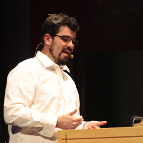

René Föhring

Credo - Analysing AST for Fun and Profit
Today's developer tools are mostly used in a very technocratic fashion where there's success and failure, 1 and 0. Either a tool thinks you're totally wrong or you're 100% right. You get shouted at or praised. There is no middle ground. Except there is. Credo, the first teaching code linter for Elixir, puts its focus on the in-between: How errors can be opportunities for learning. How AST analysis can be fun and educational. And how one can combine these features into a professional tool that gives straight results while still treating its users as human beings. This talk will show the importance of teaching, learning, user experience and interface design so everyone can see how the idea of "less dogmatic code analysis" led to the creation of a tool that excites Alchemists around the globe.
Talk objectives
To show the educational and community-supporting relevance of human-focused tooling.
Target audience
Elixir programmers and everyone interested in becoming one.
Started with BASIC at the age of 10, been employed as a coder since age 17. Now, at 32, René has 10 years of Ruby and 2 years of Elixir experience.
Github: rrrene
Twitter: @rrrene